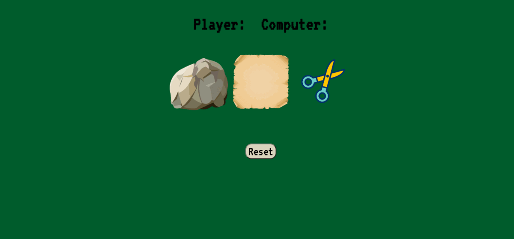
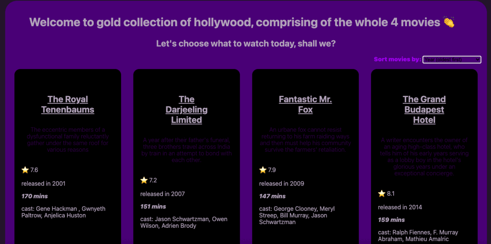

Hello, my name is Mariana Dementeva, please find the gallery of my projects down below, if you click "see more" you can read on a bit about the process of project making. I included +2 projects outside of the scope of FAC application.
project 1 Tribute Page

project 2 Weather

project 3 Hobby page

project 4 Project Gallery
project 5 Movie Data
project 6 Website